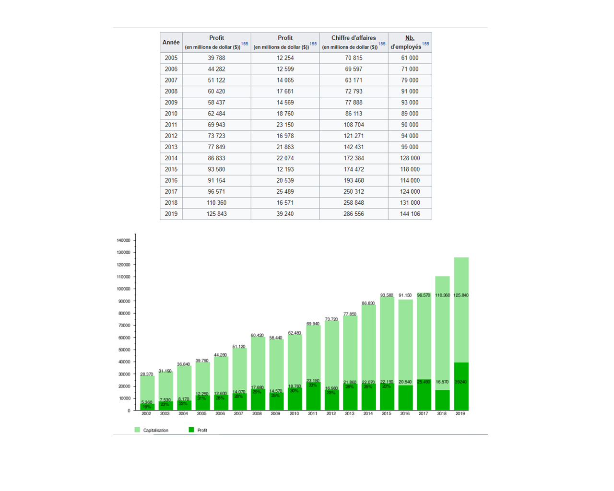

Nom Microsoft
Fondateurs Bill Gates et Paul Allen
État Washington
Date de création 4 avril 1975
Site Web www.microsoft.com
Microsoft Corporation est une multinationale informatique et micro-informatique américaine, fondée en 1975 par Bill Gates et Paul Allen. Microsoft est la première capitalisation boursière du NASDAQ[réf. nécessaire]. En 2018, le chiffre d'affaires s’élevait à 110,36 milliards de dollars8[source insuffisante]. Elle est dirigée, depuis le 4 février 2014, par Satya Nadella qui succède à Steve Ballmer et Bill Gates en qualité de directeur général9,10. En 2020 l'entreprise emploie 148 000 personnes dans 120 pays3.
Son activité principale consiste à développer et vendre des systèmes d’exploitation, des logiciels et des produits matériels dérivés. Les meilleures ventes historiques sont portées par les systèmes d’exploitation MS-DOS puis Windows, et la suite bureautique Office, qui alimentent à présent une politique de diversification. Windows a atteint une position dominante sur les ordinateurs personnels, avec plus de 90 % de parts de marché dans le monde11. Microsoft est présent dans l'informatique en nuage (Azure), les sites Web (moteur de recherche Bing, réseau social LinkedIn, messagerie électronique Outlook.com), les consoles de jeu vidéo (Xbox) et les tablettes PC (Surface).
La vigoureuse stratégie commerciale menée par Microsoft lui a valu des déboires judiciaires, notamment aux États-Unis et dans l'Union européenne. Cette stratégie s'est notamment appuyée le principe Embrace, extend and extinguish, l'abus de position dominante de Windows, et la vente liée.
4 avril 1975 Fondation de la société par Bill Gates et Paul Allen
1981 Lancement de MS-DOS
1985 Lancement de Windows 1.0
1992 Lancement d'Office
2001 Lancement de la Xbox et de Windows XP
2009 Lancement du système d'exploitation mobile : Windows Phone 7
2014 Rachat de la branche mobile de Nokia
2015 Lancement de Windows 10
Juin 2016 Microsoft rachète le réseau social professionnel LinkedIn pour plus de 26 milliards de dollars
